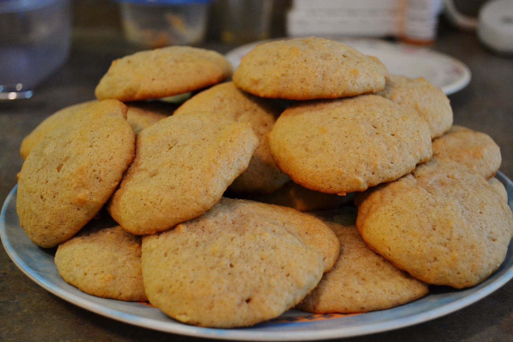

Applesauce Cookies
This recipe is sure to brighten the face of all the little ones running around on Christmas morning!
Ingredients
- 0.5 cup shortening
- 1 cup white granulated sugar
- 1 cup unsweetened applesauce
- 1 tsp baking soda
- 2 cup sifted flour
- 0.5 tsp salt
- 0.5 cup chopped raisins
- 0.5 cup chopped nuts of choice
- 1 tsp cinnamon
- 0.5 tsp cloves
Steps
- Mix shortening and sugar until creamy smooth, add applesauce, then blend mixture
- Sift flour, baking soda, salt, and spices together in bowl
- Add dry ingredients to wet ingredients and stir until smooth; add raisins and nuts
- Drop by tsp on greased cookie sheet
- Bake at 375°F for ~12 minutes
- Yields 4 dozen cookies